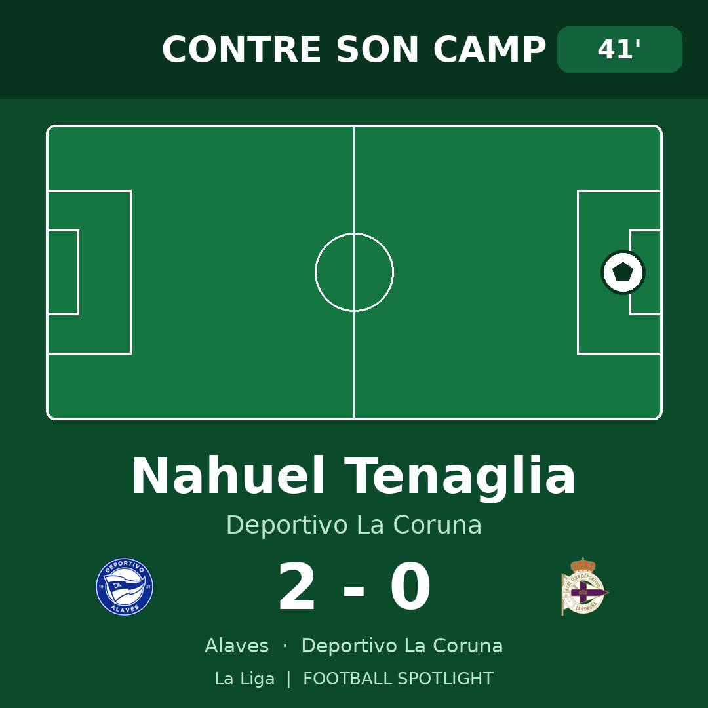
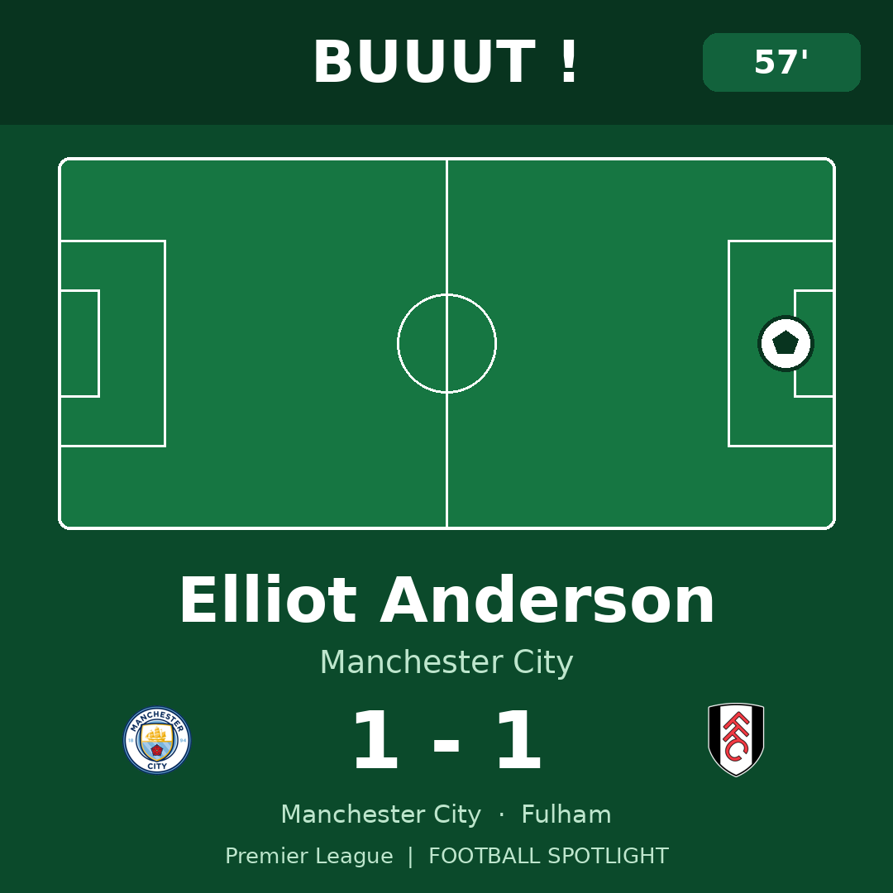
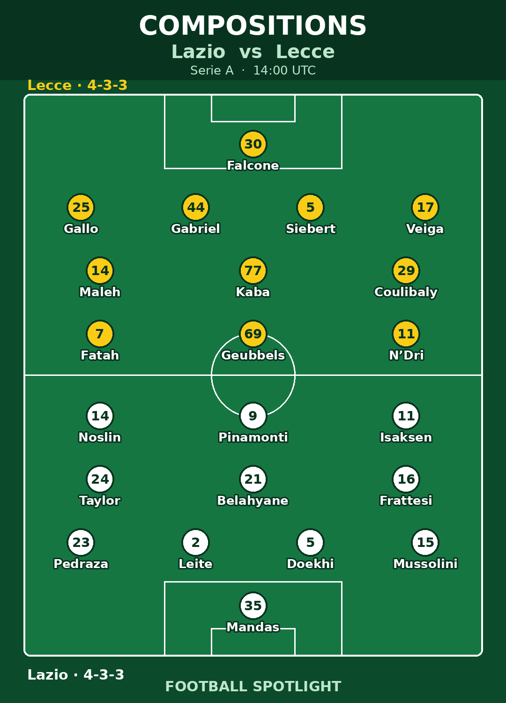
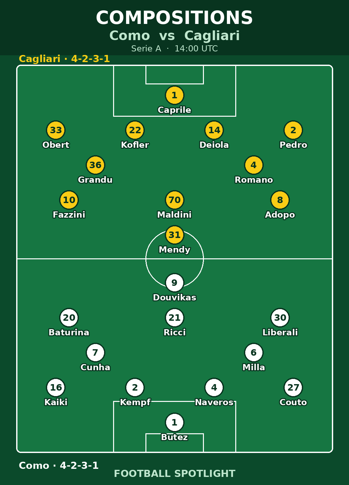
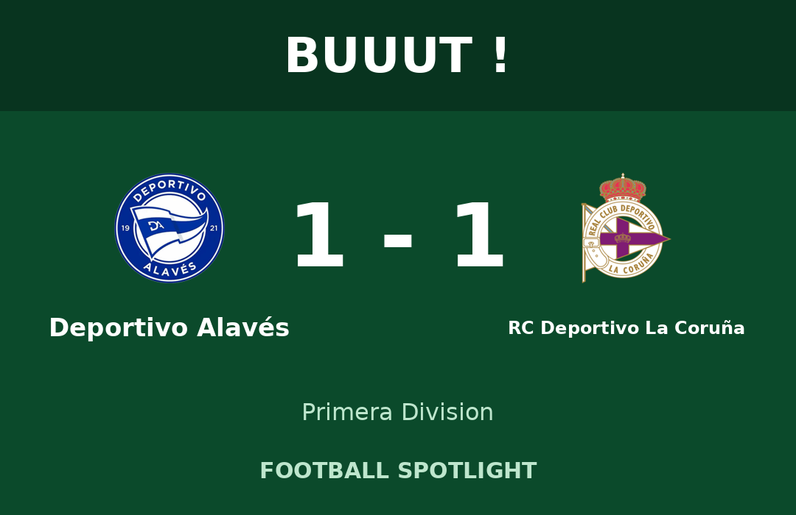
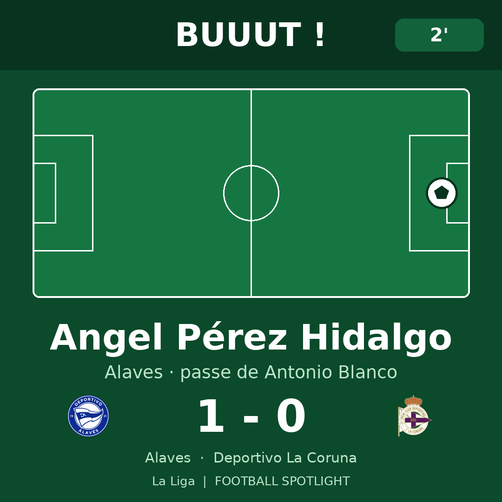
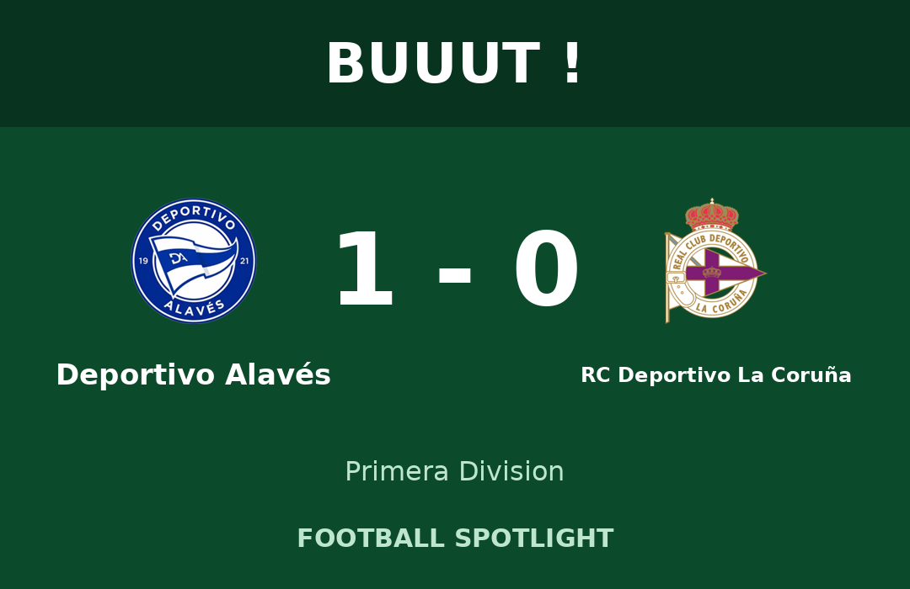
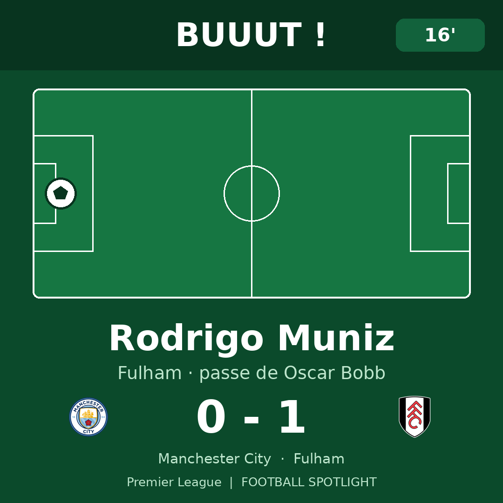
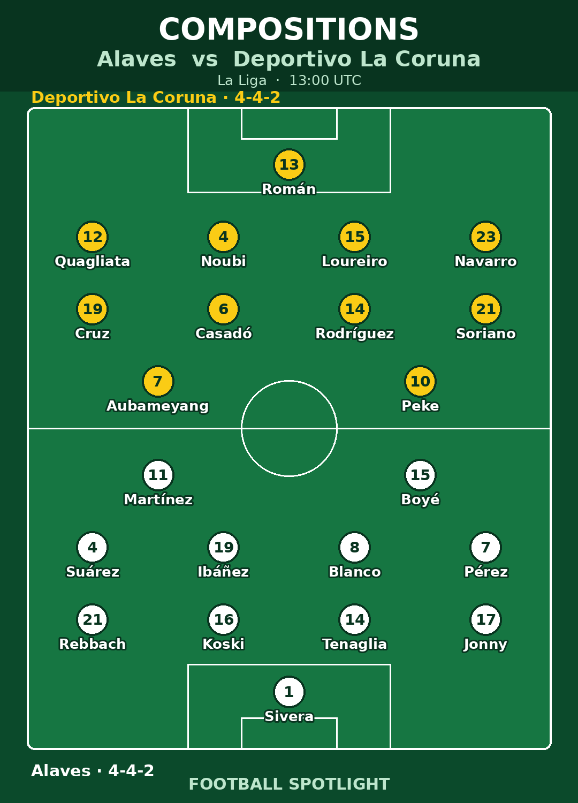
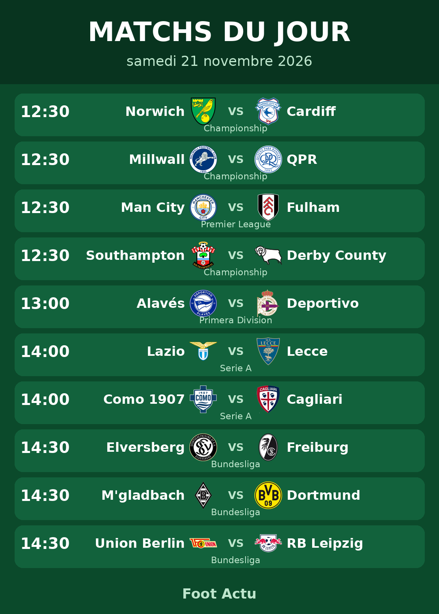

Alaves 2 - 0 Deportivo La Coruna
ℹ️ Détails du but (41') : Nahuel Tenaglia (Deportivo La Coruna).
📊 Alaves 2 - 0 Deportivo La Coruna
#Football #Direct

ℹ️ Détails du but (41') : Nahuel Tenaglia (Deportivo La Coruna).
📊 Alaves 2 - 0 Deportivo La Coruna
#Football #Direct

ℹ️ Détails du but (57') : Elliot Anderson (Manchester City).
📊 Manchester City 1 - 1 Fulham
#Football #Direct

📋 COMPOSITIONS – Lazio vs Lecce
🏆 Serie A · ⏰ 14:00 UTC
🏠 Lazio (4-3-3)
Gardien : C. Mandas
Défenseurs : Pedraza, Diogo Leite, D. Doekhi, R. Floriani Mussolini
Milieux : K. Taylor, R. Belahyane, D. Frattesi
Attaquants : T. Noslin, A. Pinamonti, G. Isaksen
🧑💼 Entraîneur : G. Gattuso
✈️ Lecce (4-3-3)
Gardien : W. Falcone
Défenseurs : A. Gallo, Tiago Gabriel, J. Siebert, Danilo Veiga
Milieux : Y. Maleh, M. Kaba, L. Coulibaly
Attaquants : A. Ahmed Fatah, W. Geubbels, K. N’Dri
🧑💼 Entraîneur : E. Di Francesco
#Football #SerieA

⚽ BUUUT ! Man City marque.
📊 Man City 1 - 1 Fulham
🏆 Premier League
#Football #PremierLeague #Direct

📋 COMPOSITIONS – Como vs Cagliari
🏆 Serie A · ⏰ 14:00 UTC
🏠 Como (4-2-3-1)
Gardien : J. Butez
Défenseurs : Kaiki, M. Kempf, Jacobo Ramón Naveros, Yan Couto
Milieux : L. da Cunha, Luis Milla, M. Baturina, S. Ricci, M. Liberali
Attaquants : T. Douvikas
🧑💼 Entraîneur : Cesc Fàbregas
✈️ Cagliari (4-2-3-1)
Gardien : E. Caprile
Défenseurs : A. Obert, R. Kofler, A. Deiola, Zé Pedro
Milieux : N. Grandu, A. Romano, J. Fazzini, D. Maldini, M. Adopo
Attaquants : P. Mendy
🧑💼 Entraîneur : F. Pisacane
#Football #SerieA

⚽ BUUUT ! Deportivo marque.
📊 Alavés 1 - 1 Deportivo
🏆 Primera Division
#Football #PrimeraDivision #Direct

ℹ️ Détails du but (2') : Angel Pérez Hidalgo (Alaves), passe décisive de Antonio Blanco.
📊 Alaves 1 - 0 Deportivo La Coruna
#Football #Direct

⚽ BUUUT ! Alavés marque.
📊 Alavés 1 - 0 Deportivo
🏆 Primera Division
#Football #PrimeraDivision #Direct

ℹ️ Détails du but (16') : Rodrigo Muniz (Fulham), passe décisive de Oscar Bobb.
📊 Manchester City 0 - 1 Fulham
#Football #Direct

⚽ BUUUT ! Fulham marque.
📊 Man City 0 - 1 Fulham
🏆 Premier League
#Football #PremierLeague #Direct

📋 COMPOSITIONS – Alaves vs Deportivo La Coruna
🏆 La Liga · ⏰ 13:00 UTC
🏠 Alaves (4-4-2)
Gardien : Sivera
Défenseurs : A. Rebbach, V. Koski, N. Tenaglia, Jonny
Milieux : Denis Suárez, Pablo Ibáñez, Antonio Blanco, Angel Pérez
Attaquants : Toni Martínez, L. Boyé
🧑💼 Entraîneur : Quique Sánchez Flores
✈️ Deportivo La Coruna (4-4-2)
Gardien : Leo Román
Défenseurs : G. Quagliata, L. Noubi, Miguel Loureiro, Ximo Navarro
Milieux : Luismi Cruz, Marc Casadó, Riki Rodríguez, Mario Soriano
Attaquants : P. Aubameyang, Peke
🧑💼 Entraîneur : Antonio Hidalgo
#Football #LaLiga

📋 COMPOSITIONS – Manchester City vs Fulham
🏆 Premier League · ⏰ 12:30 UTC
🏠 Manchester City (4-2-3-1)
Gardien : G. Donnarumma
Défenseurs : N. O'Reilly, M. Guéhi, Rúben Dias, A. Khusanov
Milieux : E. Anderson, A. Bouaddi, J. Doku, P. Foden, I. Ndiaye
Attaquants : E. Haaland
🧑💼 Entraîneur : E. Maresca
✈️ Fulham (4-2-3-1)
Gardien : B. Leno
Défenseurs : R. Sessegnon, C. Bassey, D. Affengruber, K. Tete
Milieux : S. Charles, S. Berge, A. Iwobi, Joshua King, Oscar Bobb
Attaquants : Rodrigo Muniz
🧑💼 Entraîneur : Álvaro Arbeloa
#Football #PremierLeague

🚨 On demande à Gattuso s’il s’inquiète que ses joueurs passent toute la nuit à jouer à GTA VI : sa réponse vaut le détour
L’entraîneur de la Lazio, légende mythique du football italien, a été interrogé lors d’une conférence de presse sur ce problème potentiel et sur la façon dont il l’évalue.
📰 Source : AS
#Football #Actu
🚨 Mercato, en direct : rumeurs, arrivées et départs en Liga, Premier League, Serie A...
Suivez en direct les dernières actualités du mercato du 20 novembre 2026 : départs, arrivées...
📰 Source : AS
#Football #Actu
🚨 FC Porto : le pire but contre son camp de l’histoire signé Francisco Moura !
En Coupe du Portugal face à l’USC Paredes, le latéral gauche du FC Porto Francisco Moura a livré l’une des séquences les plus improbables de la saison en inscrivant un but contre son camp lunaire. (…)
📰 Source : Foot Mercato
#Football #Actu
🚨 Mercato, en direct : rumeurs, arrivées et départs en Liga, Premier League, Serie A...
Suivez en direct les dernières actualités du mercato du 21 novembre 2026 : départs, arrivées...
📰 Source : AS
#Football #Actu
🚨 Le Rayo Vallecano remboursera l’argent de l’exil à Butarque
Ce samedi, le Rayo Vallecano accueille Valence au stade de Vallecas. Et tout indique que cela se fera dans un climat de totale sérénité sur le plan de l’ambiance et dans le cadre des négociations menées par le club avec les représentants et les supporters du club, toujours dans le but de…
📰 Source : Mundo Deportivo
#Football #Actu
🚨 Antonio Conte se lâche et dézingue Manchester United
Manchester United cherche à insuffler un nouveau souffle à son projet sportif. Après plusieurs saisons décevantes, les Red Devils ont décidé de miser sur Mauricio Pochettino pour retrouver les sommets (…)
📰 Source : Foot Mercato
#Football #Actu
🚨 "Ses coéquipiers n’avaient jamais vu un talent pareil" : l’ascension fulgurante de Diomandé, d’une "chambre partagée" jusqu’au Real en moins de deux ans
Alors qu’il avait commencé 2025 en cinquième division espagnole, Yan Diomandé bouscule aujourd’hui la hiérarchie du Real Madrid. De ses premiers matchs professionnels à sa complicité avec Kylian Mbappé, récit de sa trajectoire météorique.
📰 Source : RMC Sport
#Football #Actu
🚨 Mort de Jesus de Miguel : première apparition émouvante du gardien d'Andorre Jesus Owono depuis le drame
Le gardien d'Andorre Jesus Owono, sanctionné douze matchs pour son geste fatal sur Jesus de Miguel, est apparu très marqué dans les tribunes en marge d'un match de son équipe vendredi.
📰 Source : RMC Sport
#Football #Actu
🚨 Le Bilbao Athletic a un déplacement difficile à Anduva
Le Bilbao Athletic a aujourd'hui un match difficile à Anduva. Les « Cachorros » se rendent chez le Mirandés (13 heures), une équipe qui occupe le haut du classement avec 20 points, soit quatre de plus que l'équipe réserve « rojiblanca ».
📰 Source : Mundo Deportivo
#Football #Actu
🚨 Un retour amer à la propriété
Beñat Prados a été la grande nouveauté dans le onze aligné par Terzic face à l’Espanyol. Alors que tout le monde attendait Gere au milieu de terrain, l’Allemand a misé sur le Navarrais lors de son premier match en tant que titulaire.
📰 Source : Mundo Deportivo
#Football #Actu
🚨 Doyen Quest et Blow Your Wad s’affrontent à nouveau dans l’Ascot’s 1965 Chase
Nous avons une journée de courses chargée samedi, avec des épreuves à Ascot, Lingfield Park et Newcastle, en direct sur Sky Sports Racing...
📰 Source : Sky Sports
#Football #Actu
🚨 Alexandre Lafitte débarque au Soudan pour coacher Al-Hilal, "s’il y a un problème, la France ne peut pas m’aider"
À seulement 29 ans, et malgré trois saisons d’expérience comme coach principal en Afrique (Stade d’Abidjan et Marumo Gallants en Afrique du Sud), Alexandre Lafitte s’apprête à faire un saut vers l’inconnue la plus totale.
📰 Source : RMC Sport
#Football #Actu
🚨 Le Séville FC et le Betis, tous deux en Europe, disputent le premier derby de la saison
Ce samedi, le Séville FC et le Betis s’affrontent au Sánchez-Pizjuán lors du premier derby de la saison, un duel qui arrive à point nommé pour les deux protagonistes, les deux équipes étant classées aux places européennes et prêtes à en découdre.
📰 Source : Mundo Deportivo
#Football #Actu
🚨 Duel direct pour le maintien à Vallecas
Le Rayo Vallecano et Valence s’affrontent cet après-midi à Vallecas dans un duel direct où les deux équipes ont besoin de gagner pour reprendre leur souffle au classement.
📰 Source : Mundo Deportivo
#Football #Actu
🚨 Le San Juan At., pour mettre fin à la série du Cerdanyola
Le San Juan At. veut mettre fin à la série du Cerdanyola, qui n'a pas perdu depuis six journées et qui s'est hissé à la deuxième place. Dani Sánchez se retrouve sans Víctor Pérez, suspendu. Jaume est incertain.
📰 Source : Mundo Deportivo
#Football #Actu
🚨 L’équipe réserve d’Osasuna, de retour dans le haut du classement
Osasuna veut être fort à domicile, enchaîner une deuxième victoire et se qualifier à nouveau pour les play-offs. Pour ce faire, il devra faire preuve de la même maîtrise que lors de la dernière journée. Bruno Pérez est forfait. Carbonell et Nacho Rubio sont les absents du Barbastro - Marcos López/Adrián Mora
📰 Source : Mundo Deportivo
#Football #Actu
🚨 Quatre matchs se déroulent ce samedi : le St. Andreu reçoit le Madrileño et l'Europa se rend à Águilas
Une ambiance de gala se prépare pour accueillir ce match contre l’Atlético Madrileño au stade Narcís Sala, lors de l’inauguration du terrain en gazon synthétique, après son « exil » aux installations de Can Dragó et son dernier match à domicile contre Teruel au stade Palamós-Costa Brava.
📰 Source : Mundo Deportivo
#Football #Actu
🚨 Jamais deux sans trois pour l’Athletic
Lors de la conférence de presse d’hier soir à San Mamés, qui précédait le match, Terzic a évité de répondre de manière concrète à la question de savoir s’il était possible de faire jouer Canales et Sancet ensemble dans le même onze de départ, une fois que ce dernier se sera remis de sa blessure.
📰 Source : Mundo Deportivo
#Football #Actu
🚨 Van Gerwen « se prépare au pire » alors qu'il affronte Sykes en quarts de finale du Grand Slam
Michael van Gerwen s’est qualifié pour son premier quart de finale de tournoi majeur depuis plus d’un an, mais il est confronté à un adversaire auquel il ne s’attendait probablement pas.
📰 Source : Sky Sports
#Football #Actu
🚨 Huées, blessures et sceptiques : le parcours de White pour revenir au sommet
Lorsque Ben White s'est éloigné après avoir marqué le troisième but de l'Angleterre contre les championnes du monde espagnoles, il ne s'agissait pas seulement d'un but qui s'est avéré être celui de la victoire dans un match exceptionnel.
📰 Source : BBC Sport
#Football #Actu
🚨 Besoin central... ou secondaire
Le mercato d’hiver approche et le recrutement d’un défenseur central apparaît à nouveau comme le principal besoin du Barça. C'était déjà le cas cet été, a priori avec l'attaquant de pointe, mais finalement personne n'est arrivé pour occuper ce poste.
📰 Source : Mundo Deportivo
#Football #Actu
🚨 Un autre miracle à Sarral ?
Existe-t-il une possibilité d'organiser un match avec des joueurs et des joueuses mixtes des deux équipes nationales espagnoles à des fins caritatives ? Serait-il possible que le match se déroule sur un terrain de football d'un petit village comme Sarral, qui compte 1 644 habitants ?
📰 Source : Mundo Deportivo
#Football #Actu
🚨 Newcastle - Arsenal : à quelle heure et sur quelle chaîne regarder le match de Premier League en direct ?
Solidement installé en tête de la Premier League, Arsenal se rend sur la pelouse de Newcastle avec l’ambition de poursuivre sa belle série. Voici toutes les informations pour suivre cette rencontre en direct.
📰 Source : RMC Sport
#Football #Actu
🚨 Lens - Toulouse : sur quelle chaîne TV et à quelle heure regarder le match de Ligue 1 en direct ?
Affiche indécise et électrique au stade Bollaert ! À égalité parfaite au classement avec 13 points chacun, le RC Lens et le Toulouse FC s’affrontent dans un duel charnière. Avec, en prime, les grands débuts de Didier Digard sur le banc lensois !
📰 Source : RMC Sport
#Football #Actu
🚨 Presse : Osimhen prêt à écouter les offres de Manchester United
Les articles principaux et les rumeurs de transferts des journaux de samedi...
📰 Source : Sky Sports
#Football #Actu
🚨 GP de Las Vegas : Russell le plus rapide en Q1, Verstappen averti pour conduite imprudente EN DIRECT !
📰 Source : Sky Sports
#Football #Actu
🚨 Smith nommé dans l'équipe pour son retour dans le championnat national, dans un contexte de silence autour de l'affaire du « Sandpapergate »
📰 Source : Sky Sports
#Football #Actu
🚨 Le 1x1 de l’Athletic face à l’Espanyol
- LE MEILLEUR - IÑAKI WILLIAMS Persévérant
📰 Source : Mundo Deportivo
#Football #Actu
🚨 Bayern 1-1 Cologne : Contusion au pied pour Olise et grosse blessure pour Kane
Sale soirée pour le Bayern. Sorti sur blessure, Olise souffre d'une simple contusion à l'avant-pied lors du match nul (1-1) du Bayern contre cologne.
📰 Source : RMC Sport
#Football #Actu
🚨 Séville-Betis : ennemis intimes
Les derbys sévillans entre le Sevilla FC et le Real Betis sont des affrontements qui vont bien au-delà de simples rencontres sportives...
📰 Source : AS
#Football #Actu
🚨 « Il m'a poussé contre la barrière !' - Russell et Verstappen entrent en collision lors de la dernière séance d'essais
George Russell et Max Verstappen se sont percutés lors de la dernière séance d’essais du Grand Prix de Las Vegas.
📰 Source : Sky Sports
#Football #Actu
🚨 Larsen résiste à Palmowski pour remporter la première course de Las Vegas
📰 Source : Sky Sports
#Football #Actu
🚨 Real Madrid-Celta : les joueurs qui ont porté les deux maillots
Découvrez quels joueurs ont porté le maillot du Real Madrid et du Celta de Vigo à un moment de leur carrière professionnelle. Alberty, Michel Salgado, Núñez…
📰 Source : AS
#Football #Actu
🚨 Une du MD Bizkaia-Araba d’aujourd’hui, samedi
Défaite de l'Athletic à San Mamés. L'Espanyol d'Eder Sarabia s'est imposé face aux Lions sur le score de 0-1. Les Rouge et Blanc n’ont pas cessé d’essayer, mais ils n’ont pas réussi à trouver le chemin des filets.
📰 Source : Mundo Deportivo
#Football #Actu
🚨 Les 11 entraîneurs qui ont dirigé le plus d’équipes en première division au cours des 50 dernières années
De Marcel Domingo à Mendilibar : les entraîneurs des 50 dernières années ayant dirigé le plus d’équipes en première division.
📰 Source : AS
#Football #Actu
⏱️ TERMINÉ
⚽ SÃO PAULO 0 - 1 FLUMINENSE
✅ Victoire de Fluminense
🏆 Campeonato Brasileiro Série A · Journée 35
#Football #CampeonatoBrasileiroSérieA
📊 Classement Primeira Liga (top 10)
🥇 Porto – 33 pts
🥈 SL Benfica – 28 pts
🥉 Sporting CP – 24 pts
4. Santa Clara – 21 pts
5. Arouca – 20 pts
6. Acad. Viseu – 20 pts
7. Gil Vicente – 18 pts
8. Braga – 17 pts
9. Moreirense – 14 pts
10. Famalicão – 13 pts
📌 Porto est en tête avec 33 points en 11 matchs, 5 point(s) d'avance sur SL Benfica.
#Football
📊 Classement Bundesliga (top 10)
🥇 Bayern – 22 pts
🥈 Dortmund – 21 pts
🥉 Freiburg – 19 pts
4. RB Leipzig – 18 pts
5. Leverkusen – 16 pts
6. Bremen – 15 pts
7. Elversberg – 13 pts
8. Stuttgart – 12 pts
9. Hoffenheim – 12 pts
10. Frankfurt – 12 pts
📌 Bayern est en tête avec 22 points en 10 matchs, 1 point(s) d'avance sur Dortmund.
#Football
📊 Classement Serie A (top 10)
🥇 Lazio – 29 pts
🥈 Inter – 28 pts
🥉 Roma – 27 pts
4. Milan – 24 pts
5. Como 1907 – 23 pts
6. Frosinone – 20 pts
7. Juventus – 18 pts
8. Bologna – 17 pts
9. Cagliari – 16 pts
10. Napoli – 15 pts
📌 Lazio est en tête avec 29 points en 11 matchs, 1 point(s) d'avance sur Inter.
#Football
📅 MATCHS DU JOUR – samedi 21 novembre 2026
🕒 12:30 – Norwich vs Cardiff (Championship)
🕒 12:30 – Millwall vs QPR (Championship)
🕒 12:30 – Man City vs Fulham (Premier League)
🕒 12:30 – Southampton vs Derby County (Championship)
🕒 13:00 – Alavés vs Deportivo (Primera Division)
🕒 14:00 – Lazio vs Lecce (Serie A)
🕒 14:00 – Como 1907 vs Cagliari (Serie A)
🕒 14:30 – Elversberg vs Freiburg (Bundesliga)
🕒 14:30 – M'gladbach vs Dortmund (Bundesliga)
🕒 14:30 – Union Berlin vs RB Leipzig (Bundesliga)
🕒 14:30 – Leverkusen vs SC Paderborn (Bundesliga)
🕒 14:30 – Frankfurt vs Hoffenheim (Bundesliga)
🕒 15:00 – Wolverhampton vs Charlton (Championship)
🕒 15:00 – Bournemouth vs Nottingham (Premier League)
🕒 15:00 – Middlesbrough vs Bristol City (Championship)
🔥 Bon match à tous !
#Football

🏁 Score final – Primera Division
Athletic 0 - 1 Espanyol
#Football #PrimeraDivision
🏁 Score final – Ligue 1
Troyes 3 - 1 Le Havre
#Football #Ligue1
⚽ Troyes 3-1 Le Havre : "Tout est encore instable" Ismaël veut y croire
Source : RMC Sport
⚽ Bayern: la tuile est confirmée pour Kane, gravement blessé à la cheville et absent plusieurs mois
Source : RMC Sport
⚽ Bayern Munich
Source : RMC Sport
⚽ Ligue des nations : France-Espagne, l'heure de la RECONQUISTA
Source : RMC Sport
🏁 Score final – Bundesliga
Bayern 1 - 1 1. FC Köln
#Football #Bundesliga
⚽ Le stade Bauer plongé dans le noir: le match Red Star-Pau interrompu à cause d’un problème d’éclairage
Source : RMC Sport